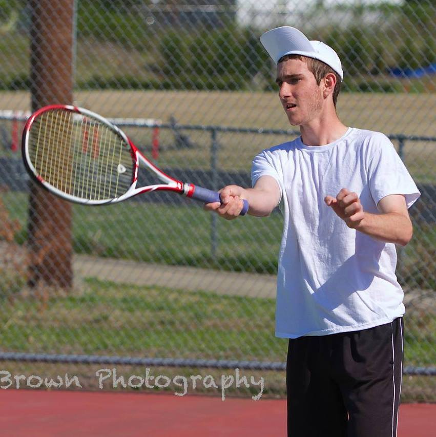
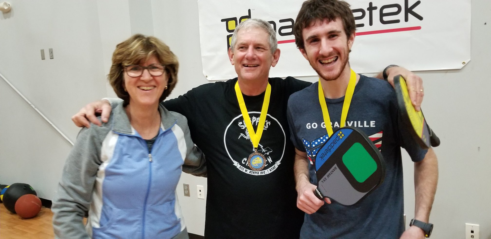
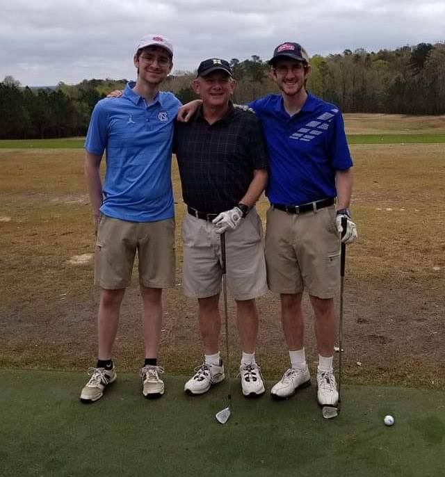

Abraham Post's Portfolio

I was born in Salisbury, NC. I attended Overton Elementary School, Knox Middle School, and Salisbury High School, the same three schools my dad attended 38 years before me. I applied to both Carolina and NC State, but in the easiest decision of my life decided to attend Carolina. I am a senior Computer Science and Political Science major, with a minor in Information Systems.
I have played tennis for almost my whole life. My father was a 5.0 tennis player, and his father was an excellent tennis player back in the day as well. I competed in USTA tournaments until I was 14, and then played several years of high school tennis. I put the game down for a few years, but am now picking it back up again with a renewed passion!
My dad ran a computer store when I was little, so I always grew up with at least a few in my house. I dabbled in programming and web development all throughout my childhood, but really the bug when I took AP Computer Science through NCVPS in high school. I decided I wanted to school for Computer Science, and have never regretted that decision for a moment.

Pickleball is a fast growing sport- in fact, the fastest growing in the United States- that combines aspects of Tennis, Badminton, and Table Tennis. It is played on a court around 1/4 of the size of a tennis court, and uses a whiffle ball, and solid paddle. It has power, touch, and as an absolutely addicting pastime. I am a semi-professional player, and play in open tournaments all over the Southeast. I have even won some money!
I have been a golfer since I was in middle school. It's a great pasttime that I share with my brother and father, and we often go to celebrate special events. I also played on the golf team in high school for three years, and had a lot of fun competing in local and state tournaments.
